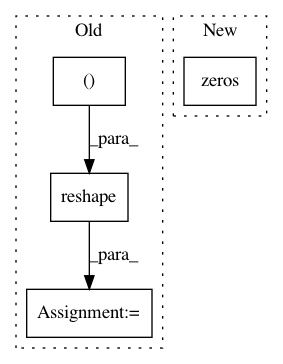

f4559a3d47510f776b3e38d5aceb07ee4b4b0ea9,gpflow/transforms.py,DiagMatrix,forward,#DiagMatrix#Any#,270
Before Change
def forward(self, x):
// Create diagonal matrix
x = self._positive_transform.forward(x).reshape((-1, self.dim))
m = np.zeros((x.shape[0], x.shape[1], x.shape[1]))
m[(np.s_[:],) + np.diag_indices(x.shape[1])] = x
return m
def backward(self, y):
After Change
def forward(self, x):
// create diagonal matrices
m = np.zeros((x.size * self.dim)).reshape(-1, self.dim, self.dim)
x = x.reshape(-1, self.dim)
m[(np.s_[:],) + np.diag_indices(x.shape[1])] = x
return m
In pattern: SUPERPATTERN
Frequency: 3
Non-data size: 4
Instances
Project Name: GPflow/GPflow
Commit Name: f4559a3d47510f776b3e38d5aceb07ee4b4b0ea9
Time: 2017-11-24
Author: james@prowler.io
File Name: gpflow/transforms.py
Class Name: DiagMatrix
Method Name: forward
Project Name: keras-team/keras
Commit Name: 45a10bc6d708fade197a37bfbc62312caf70e6a7
Time: 2017-02-17
Author: francois.chollet@gmail.com
File Name: keras/layers/convolutional_recurrent.py
Class Name: ConvLSTM2D
Method Name: get_constants
Project Name: keras-team/keras
Commit Name: c1a72b36444c8027c27c2dc02dc03d5b69a5e389
Time: 2016-10-13
Author: jeanmichel.arbona@gmail.com
File Name: keras/layers/recurrent_convolutional.py
Class Name: LSTMConv2D
Method Name: get_constants